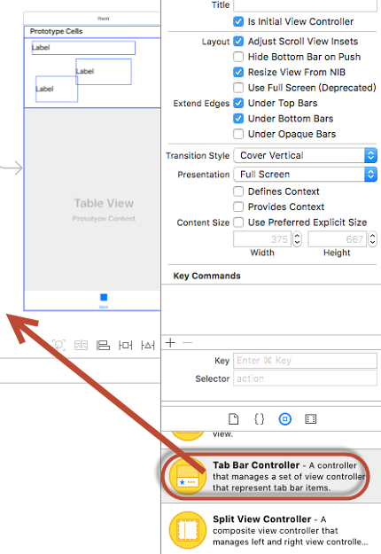
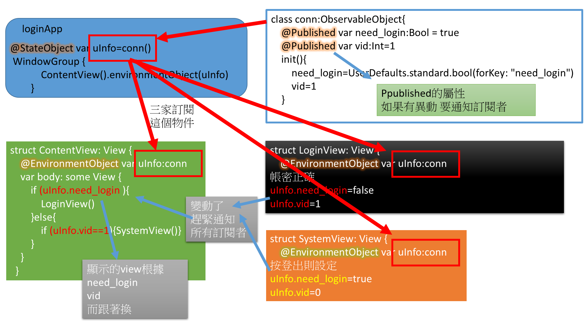
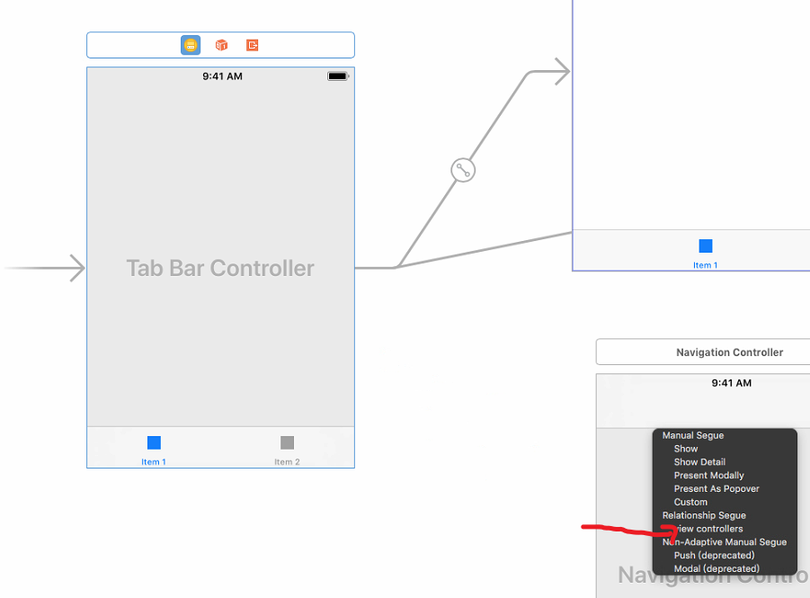
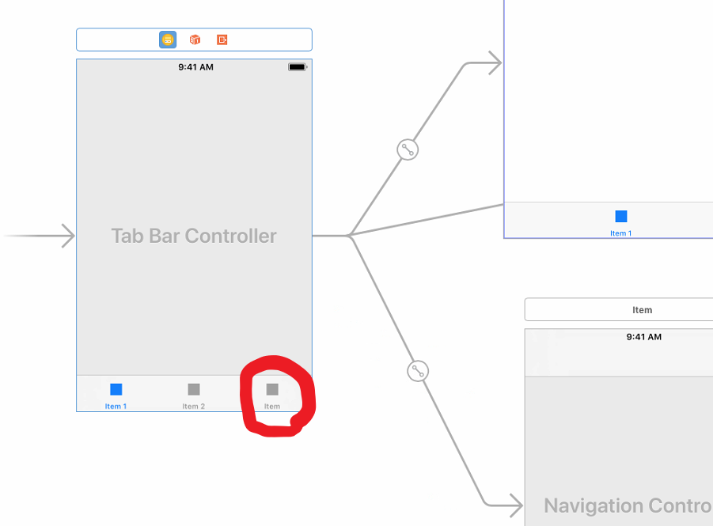
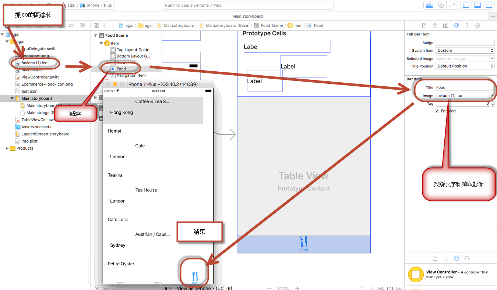
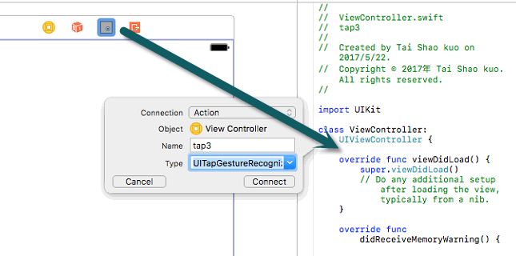

1. 樣板Tabbar的使用
iOS提供幾個現成版面，可以節省建置的時間。
在這個單元我們主要是要練習TabBAR，他是一個很常見的頁面樣板，，icon在下方，只要點選ICON就可以顯示該頁面

這個單元要把餐廳專案套用到Tabbar成為其中的一個頁面
然後另外加兩個頁面
登入畫面和登出畫面
登入的功能
我們先使用程式內預設的假帳密做出登入功能，成功進入餐廳列表畫面，失敗出現紅色提失敗醒文字
最後再加上已登入的功能，如果已登入未登出，那末下次開APP就會直接進入餐廳列表畫面，而不是登入畫面
把餐廳專案套用Tabbar樣版
拉進去tabbed bar

1 把啟動畫面移到tabbed bar
2 接下來從tabbed bar拖曳到餐廳列表

3 選擇view controllers

4 檢查是否出現第三個icon

替換餐廳專案的icon和文字
IconArchive這個網站可以找到大量的icon，每個icon都有各種尺寸可以下載，這邊我建議下載32pixel以下的比較適合。

2 練習：登入&登出
練習的環境準備
我們不要直接做在餐廳專案中，先用一個空白專案練習登入動作
按下面說明建立練習的環境
- 開一個新專案
- 開兩個viewcontroller 指定他為起始畫面為登入畫面
- 元件設計
- 登入畫面 Label → 紅色帳密錯誤 → 拉去login.swift建立IBOutlet 取名fail
- 系統畫面 LABEL的文字顯示 《系統》
- segue設定 登入畫面到系統畫面用present Modally的segue連接 ，等等登入成功可以跳過去，取名叫做login
- 先暫時弄一個預設的假帳密
第一是登入畫面 對應類別 login.swift
第二是系統畫面 對應類別 logout.swift
帳密的輸入格 → 拉去login.swift建立IBOutlet 分別取名acc和pwd
一個登入按鈕 → 拉去login.swift建立IBAction ，等等用來寫登入的程式
一個switchb讓使用者自己決定下次開APP要不要自動登入 → 加一個IBOutlet名稱是rem
登出按鈕讓使用者跳回登入畫面 → 拉去logout.swift建立IBAction ，等等用來寫登出的程式
系統畫面到登入畫面用present Modally的segue連接 ，等等登出可以跳回去登入畫面，取名叫做logout

加上假帳密，先做假登入，好了再到遠端撈真帳密
在log.swift的類別加上兩個成員變數
var myAccount="abc"
var myPassword="123"
練習-登入、登出動作的程式
- 在登入畫面的button的程式中驗證 帳密
- 如果正確就進入系統畫面
- 如果帳密錯誤 就顯示上面紅色帳密錯誤提示
在登入按鈕的IBAction中
在登出按鈕的IBAction中，登出就跳回登入畫面
3 練習-實現自動登入
一個view的生命週期
後面會用到這個背景知識，所以先介紹一下
下圖是一個view被啟動之後到結束的一個生命周期

像ViewDidLoad()，我們就用過了，他是在view啟動然後LOAD進來之後，
這時候才會有所謂的view，所以ViewDidLoad()是view的第一支執行的程式，
所以我們常會把一些預設的動作放在這邊
而viewDidAppear則是當view已經顯示，並且被其他view認識了
因此
viewDidLoad → 的時候有自己view的元件，所以你可以在這邊指定元件的初始值
viewDidAppear → view已經知道其他view，所以可以segue到其他view去
練習-使用UserDefaults記住登入狀態
剛才的switch要拉IBOutlet
因為你要在程式中判斷她要不要記住已登入，
這邊我設定的名稱是rem
rem.isOn如果是true，表示swictch已經打開為on，就是要自動登入
另外，要記住已登入，應該記在哪邊呢?
在iOS有一個機制，可以讓每個app可以寫一些東西上去
在關閉之後，仍被保存住，下次開啟APP時那些資料仍然還在
她就是UserDefaults，下面是會用到的方法
- 寫入UserDefaults
- 自UserDefaults讀出資料
- 自UserDefaults移除資料
UserDefaults.standard.set(uuid, forKey: "usid")
寫入一組資料key和value，這行程式《寫入key為usid，value為uuid》
x=UserDefaults.standard.string(forKey: "usid")
去取回key值為usid的value，這行《x應該會得到uuid，如果沒有這個key直則x=nil》
UserDefaults.standard.removeObject(forKey: "usid")
移除key值為usid
所以剛剛登入程式的邏輯必須修改一下
如果帳密驗證正確，在跳到系統畫面之前，必須先檢查switch有沒有on
如果on，就在UserDefaults寫入一組值，下次開啟APP時檢查這個值，如果有，就跳過登入畫面直接進入系統畫面
登入畫面的按鈕
寫登入驗證程式如下
另外在登出時，要去UserDefaults把這個值刪除，下次登入就會進入登入畫面
系統畫面button加action，加入下面程式，登出後跳登入畫面
UserDefaults.standard.removeObject(forKey: "usid")
self.performSegue(withIdentifier:"logout",sender:self)
說明
let uuid = "apple"
UserDefaults.standard.set(uuid, forKey: "usid")
是加{"usid" : ""apple"}到UserDefaults
而
UserDefaults.standard.removeObject(forKey: "usid")
是移除
練習-實現自動登入
我們在後面章節再使用真實伺服器認證，現在仍然使用本地假認證
接下來要做自動登入 檢視UserDefaults是否有登入資訊，有的話直接進入系統，否則進入登入畫面
先有一個問題，在哪邊檢查是否已登入的UserDefaults資訊?
如果是在登入畫面檢查，那麼就算能自動登入，也會讓使用者先看到登入畫面，這樣不夠專業
所以我們新增一個空白的頁面當作APP的啟動頁面
，在這個view去檢查自動登入資訊來決定要進入登入畫面或者系統畫面，如下圖

下一個問題，要在那個view的甚麼地方寫這段程式?
讓app一啟動就開這個view，這個view一開就自動去執行自東登入判斷程式?
然後要先回顧一下剛剛教過的view的生命週期
viewDidLoad-------- 的時候有自己view的元件，所以你可以在這邊指定元件的初始值
viewDidAppear------view已經知道其他view，所以可以segue到其他view去
有這兩個可能的選擇，我們想一下
不管自動登入的判斷結果如何，他終就必須要進行segue，
在viewDidLoad中，view剛啟動根本不認識其他的view，所以你要他跳到登入的那個view他就會出現錯誤，說他不認識
所以自動登入的程式必須寫在viewDidAppear-
************************************************************
如果上面的說明聽懂了，接下來開始實作
先調整好畫面如下
最後加入的viewcontroler 叫做判斷畫面
，加cocoa touch file，設成起始畫面，目前總共3個view，關係如下，
segue按照下圖建立命名，全部都使用present Modally
在判斷畫面中的viewDidAppear加入下面程式
先檢查有沒有usid的key值
有 就跳系統畫面
沒有就跳登入畫面
4 作業
最後 請將登入功能做到餐廳專案
施作的時候，不要一次弄完所有功能
要和我上課的次序一樣
密碼先用假的，只做登入
成功之後
再加設記住登入的部分
再實現自動登入
在做專題或者以後除去做開發系統工作的時候
對於不熟的東西
要像這樣做，把工作切成一團一團，由簡到難
先做簡單的在慢慢加上其他複雜功能
每做完一個部分就先驗證，OK再繼續下一個
這樣開發系統才能很乾淨減少bug，偵錯也容易
做這個登入功能時不要一次全加上去，發現不行，摸一摸搞到一團亂，再對著老師甜甜地笑，讓老師幫你debug，這樣我會翻臉!!!
5 補充資料 iOS常用的手勢
輕敲 tap
開新專案 single view
拖曳tap gesture recognizer
設定touches屬性=3 三根手指頭
taps=1 要敲一次

加入程式碼到那個IBAction當用3跟手指頭輕敲一次，會出現一個alert
縮放 pinch
開新專案
拖曳image view 和pinch gesture 進去 分別設定IBOutlet IBAction
找一張圖放到專案 拉進去image view,
把imageview的User interaction Enabled打開
旋轉 rotation
開新專案，拖曳image view 和rotation gesture 進去 分別設定IBOutlet IBAction
揮擊 swipe
每一個swipe 只控制一個方向 所以 要拉四個
swipe 方向
touches 幾根手指

拖曳 pan
touches min 最少幾根手指拖曳
touches max 最多幾根手指拖曳